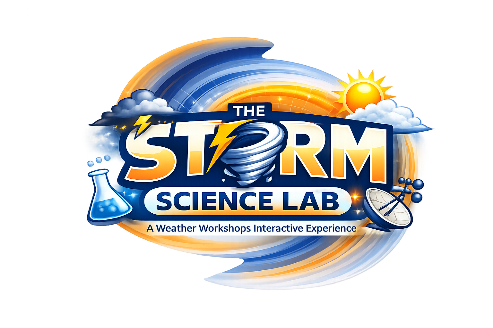

Light
Heavy
GOES
—
Play
Pause
Fit
Save
Reset
Tip: Click
Fit
then drag SW/NE corners.
Save
stores the fit on this device.
Guide
Explore
Hide
Loading story…
Back
Next
OPEN LESSON
TOOLS
RULER
PROBE
DRAW
ERASE
HOME
ZOOM
−
+
ZOOM
−
+
TIME
◀
—
▶
Weather Discovery Terms
✕
This Scene
All Terms
Tip: Later we can auto-fill “This Scene” by adding a
terms
column to your story sheet.
Lesson 1: Why can a blizzard happen in April when spring has already begun?
📘
Open Lesson
Layer
RADAR
Light
Heavy
Weather Discovery Terms
